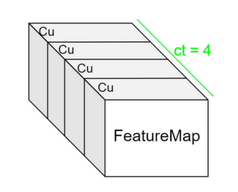
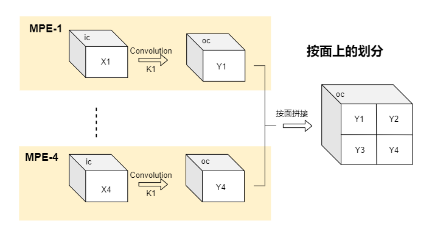
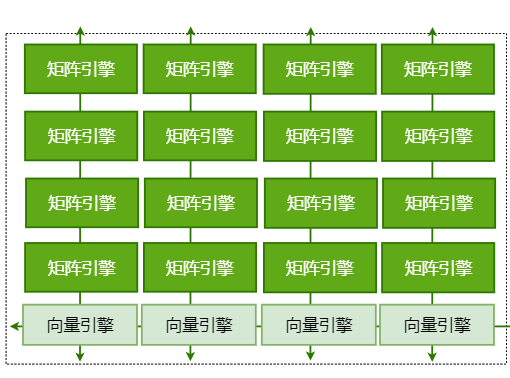

Icraft CodeGen#
一 整体介绍#
1.1 简介#
Icraft CodeGen(指令生成组件，以下简称CodeGen或指令生成)是Icraft中位于量化器和适配器后的后端组件，主要负责将量化且适配后的模型转化为能在硬件上运行的指令。
1.1.1 Icraft编译流程中的CodeGen#
Icraft编译器的编译流程包括：解析》优化》量化》适配》指令生成。指令生成作为编译的最后一环，其输入来自适配器的输出，其作用在于将网络模型按算子或结构映射为能在AI加速核上运行的指令模型。
1.1.2 组件架构#
CodeGen组件结构上包括三个动态库：icraft_buyi_codegen.dll、icraft_buyi_taskgen.dll、icraft_buyi_instgen.dll，分别是算子级的codegen，任务级的taskgen以及指令级的instgen，共三级逻辑。其中codegen用于实现各nn算子的操作，包括算子合并和替换、地址分配等，taskgen用于将合并后算子转换为Task序列，instgen则是根据Task序列，生成对应的指令序列。其中各功能之间的映射关系请参见 算子映射。
1.1.3 功能概要#
CodeGen组件包含以下几个比较重要的功能点：
算子映射：
算子映射依次进行将量化适配后模型的XIR算子序列映射为AI核对应的计算（AI硬算子，以下简称HardOp）序列，再将HardOp序列映射为表征任务的任务（以下简称Task）序列，最后将Task序列映射为表征硬件操作的指令序列（以下简称Inst），各阶段序列的映射关系请参见 算子映射。
地址分配：
CodeGen组件根据需求对网络模型中的参数、输入输出进行地址分配。其中模型参数按顺序依次存放在外部存储（External Memory，以下简称ETM）中，输入输出特征图紧随其后依次存放。由于ETM存储AI核的通信带宽受限，为了提高效率，CodeGen组件将部分满足条件的输入输出特征图存放在片上存储（On-Chip Memory，以下简称OCM）中，从而减小读写ETM的带宽压力，提高模型在硬件上的运行效率。
备注
由于硬件的限制，需要在开头预留64个ETM（此处为DDR）地址。
地址分配以byte为单位，json文件中的地址也为byte地址。因此对于存放格式有一定的要求：每个算子的参数以及输入输出特征图需要以ETM（64bytes）第一个byte作为起始地址，即对齐64byte地址。每个算子的指令按ETM（64bytes）第一个byte作为起始地址，且用空指令补齐64bytes。
备注
对于concat的输入以及split的输出，由于要拼接成一个完整特征图或需要从一个完整特征图分离成多个特征图，因此多个输入或多个输出需要连续存放。

目前CodeGen提供两种OCM分配方案：
全局评分法
记录所有可用OCM的特征图，记录它们的ID、起始时间、寿命、大小等信息； 分配器将全局分析，确定出每个特征图是否使用OCM以及具体分配位置； 并根据各特征图的得分来决定分配优先级;
局部最优动态规划法
每个节点记录M个最优（读写数据量最大的前M种情况） 第N个节点分别在前N-1个节点各自的前M个最优情况下进行分配，并记录该节点的M个最优情况，以此类推； 最后一个节点与前面所有节点的前M个最优进行组合，选取最终的最优解； 算法复杂度：M*O(n^2)；
顺序按评分踢出法
按顺序遍历所有的特征图，能存放时即分配OCM地址，若遍历到某个特征图时发现OCM空间不够，则对比该特征图与已分配的特征图的得分，若该特征图得分较高，则按顺序踢出第一个得分较低的特征图，否则不给该特征图分配OCM空间；
用户可配置OCM优化选项请参见 OCM优化配置说明。
随着大模型越来越成熟，应用也越来越广泛，当前板卡的ETM（通常为2G或4G）内存越来越紧张。为了能尽可能支持大模型的部署，CodeGen组件还提供了对ETM中特征图的内存优化。其中回收浪费内存是固定的优化方法，排序复用内存法则是一种用于内存回收的优化方案。
回收浪费的内存
ETM的地址分配是按照顺序对特征图进行分配，当遇到concat/split/reshape这类无指令算子，只需要将输入指定到输出地址上，或者将输出指定到输入地址上即可。如是便会浪费原来分配的输入或输出的内存空间。为了更高效地利用ETM，CodeGen的ETM优化将回收这部分被浪费的内存。
排序复用内存法
ETM的地址分配是按照顺序对特征图进行分配，当各算子输入特征图被使用完成且再无其他算子需要该特征图时，其内存空间可以被释放出来。为了更高效地利用ETM，CodeGen的ETM优化将释放这部分内存用以给其他特征图使用。排序复用内存法是先将所有的特征图按照尺寸大小进行排序，并按照从大到小进行地址分配，记录每个特征图的生命周期以确保所有特征图没有时间和空间上的重叠。该方案的优势是尽可能将大的特征图放在低地址空间，减少中间释放时空隙放不下其他特征图的情况。一般而言，该方案能达到最优的分配方式，最大程度减小对ETM的空间占用。
用户可配置ETM优化选项请参见 ETM优化配置说明。
Tile划分与MAC调度：
由于硬件计算过程中需要缓存部分数据以提高计算效率，因此通常会将特征图按硬件的缓存大小进行划分，本文档将划分后的特征图块称为一个Tile。硬件的计算以Tile为单位。
特征图在通道上按照固定长度为单位（布衣架构中支持通道长度单位为1，2，4，8，16，32，以下简称Cu）,将输入输出按照Cu进行Tile划分，如下图所示：

特征图在面上按照缓存大小进行划分，分块进行计算，如下图所示：

上述两个图表明了Icraft对特征图的划块方式（以下简称Tile划分），在AI核上的计算是以Tile为单位进行的，可以根据调度的不同，对不同的Tile进行并行或串行的计算。
由于布衣架构的AI核中包含4X4个MPE（矩阵处理引擎，后续简称MPE，用户可配置），共四行乘四列。每个MPE中包含一个MAC（乘加模块，后续简称MAC）单元，因此可以通过MAC调度使多个Tile并行计算。

用户可配置MPE的数量，以平衡模型计算的效率和功耗，其中可配置项 AI核配置说明。
1.1.4 指令生成编译流程#
CodeGen组件的编译流程如下：
解析适配后模型，获得XIR算子序列
将XIR算子序列根据模式匹配规则映射为HardOp序列，并记录算子的信息
模式匹配与HardOp的映射关系请参见 算子映射。
为参数、输入输出分配地址
本组件首先对参数进行地址分配，按32byte对齐。再对输入输出特征图进行地址分配，按64byte对齐。最后指令按顺序存放在其后，按64byte对齐。
指令映射
HardOp与Task序列的映射关系请参见 算子映射。 Task序列与Inst序列的映射关系请参见 算子映射。
生成带指令的模型
合并硬算子
本组件提供可配的合并硬算子功能，用于将连续的hardop进行合并，以减少icore与软件的交互，从而提高运行效率。
二 算子映射#
CodeGen组件的核心是算子的下降，从XIR算子序列映射为HardOp算子序列，在映射到Task序列，最后到Inst序列，从而实现从算子到任务再到硬件操作的下降。其映射关系如下表：
Xirop |
rules |
pattern |
hardop |
task |
|---|---|---|---|---|
Act |
act_rule |
激活 |
opActCompile |
addLutAct |
Add |
addact_rule/add_rule |
add+激活/add |
opEltwiseCompile |
addVlcu + addVactToEtm |
Add |
add_rule |
add |
opEltwiseCompile |
addVlcu + addVactToEtm |
AlignAxis |
align_axis_rule |
补通道算子 |
opAlignAxisCompile |
addAssign |
BatchNorm |
bnact_rule/bn_rule |
batchnorm+激活/batchnorm |
opScaleCompile |
addVlcu + addVactToEtm |
Concat |
concat_real_rule/concat_rule |
有实际数据搬移的concat /没有数据搬移的concat，只需通过修改地址即可实现（优先级高于需要搬移的concat） |
opConcatCompile/null |
addAssign/null |
Conv2d |
convact_rule/conv_rule |
卷积或分组卷积或conv2d_ftmp算子与激活算子的组合/卷积或分组卷积或conv2d_ftmp算子 |
opConvCompile or opGroupConvCompile |
addMpeConv + addVpeAccToEtm |
Conv2d |
convpool_rule/crp_rule |
卷积或conv2d_ftmp算子与pool算子的组合/卷积或conv2d_ftmp算子与relu以及pool算子的组合 |
opConvPoolCompile |
addMpeConv + addPoolMax(addPoolAvg) + addVpeAccToEtm |
Conv2d |
dwact_ftmp_rule/dwact_rule/dw_ftmp_rule/dw_rule |
两个输入都为ftmp的深度可分离卷积+激活（优先级高于卷积）/深度可分离卷积+激活（优先级高于卷积）/两个输入都为ftmp的深度可分离卷积（优先级高于卷积）/深度可分离卷积（优先级高于卷积） |
opDwFtmpCompile/opDwCompile/opDwFtmpCompile/opDwCompile |
addVlcu + addVactToEtm |
Conv2dTranspose |
convtransposeact_rule/convtrans_rule |
反卷积+激活/反卷积 |
opConvTransposeCompile |
addMpeConv + addVpeAccToEtm |
Copy |
copy_rule |
copy算子 |
opCopyCompile |
addAssign |
Expand |
expand_rule |
广播算子 |
opExpandCompile |
addAssign |
InstanceNorm2D |
instancenorm2d_rule |
硬算子InstanceNorm2D |
单独的硬算子指令 |
|
Layernorm |
layernorm_rule |
硬算子Layernorm |
单独的硬算子指令 |
|
Matmul |
matmulact_rule/matmul_rule |
矩阵乘+激活/矩阵乘 |
opMatMulCompile |
addMatrixMul + addVpeAccToEtm |
Multiply |
multiplyact_rule/multiply_rule |
乘法+激活/乘法 |
opSacMulCompile |
addVlcu + addVactToEtm |
Normalize |
normalize_rule |
硬算子Normalize |
单独的硬算子指令 |
|
Pad |
pad_dim_rule/pad_rule |
任意维度pad/NHWC面上pad |
opPadDimCompile/opPadCompile |
addAssign |
Maxpool/Avgpool |
pool_rule |
池化 |
opPoolCompile |
addAssignWithPad + addPoolMax （addPoolAvg） |
PruneAxis |
prune_axis_rule |
去通道算子 |
opPruneAxisCompile |
addAssign |
Reshape |
reshape_rule |
Reshape算子 |
null |
null |
Slice |
slice_rule |
slice算子 |
opSliceCompile |
addAssign |
Softmax |
softmax_rule |
softmax算子 |
单独的硬算子指令 |
|
Split |
split_rule |
split算子 |
null |
null |
Transpose |
transpose_cw_rule/transpose_wh_rule |
最后两维交换/除最后一维其他任意两个维度交换 |
opTransposeCWCompile/opTransposeWHCompile |
addAssign |
Upsample |
upsample_rule |
upsample算子 |
opResizeCompile |
addAssign/addResize |
Roll |
roll_rule |
roll算子 |
opRollCompile |
addAssign |
上述列表中，第一列为XIR对应的算子序列，由输入的Json和Raw文件解析所得。第二列的rules为CodeGen中定义的模式匹配规则列表，每个规则对应一个pattern，即第三列的内容，pattern是指原XIR的算子中可以进行融合的组合，或是根据参数的不同分别进行不同实现的组合等。第四列将不同的pattern映射到不同类型的带指令HardOp上，每个类型的HardOp对应不同的映射关系，根据各自的映射关系将算子的组合映射为任务列表，即第五列的task序列。
三 使用说明#
3.1 安装与依赖#
Icraft编译器由应用程序和对应的依赖库构成，以安装包的形式提供给用户。用户在使用Icraft编译器前，需要先安装编译器安装包、第三方依赖库以及一些常见的自定义硬算子demo。 安装上述Icraft后即可使用icraft-generate实现指令生成的调用。
3.2 参数配置#
安装完成后如需单独通过CLI调用，则可按以下示例实现：
1C:/Icraft-CLI/bin/icraft-generate.exe --json "json&raw/resnet101_adapted.json" --raw "json&raw/resnet101_adapted.raw" --log_path "logs//generator/" --jr_path "json&raw/" --ocmopt -1 --icropt 1 --xlmopt 3 --klmopt 3 --rows 4 --cols 4 --etmopt -1
其中，详细的参数列表如下所示：
参数名字 |
数据格式 |
说明 |
|---|---|---|
json |
string |
输入的中间层JSON文件(adapted阶段) |
raw |
string |
输入的中间层RAW文件(adapted阶段) |
jr_path |
string |
输出的中间文件存放的路径 |
log_path |
string（optional） |
表示log文件的存放路径，省略则为默认路径 |
path |
string（optional） |
表示路径，通常与network配合使用，表示网络路径 |
network |
string（optional） |
表示网络名称，通常与path配合使用，表示网络路径，json+raw、path+network的组合仅可存在一组 |
ddr_base |
int（optional） |
表示预留的地址空间，默认预留64x64 bytes |
rows（optional） |
int 1~4（optional） |
表示AI CORE采用的PE阵列数量（行），默认4 |
cols（optional） |
int 1~4（optional） |
表示AI CORE采用的PE阵列数量（列），默认4 |
xlmopt |
int（optional） |
表示对ifm的优化，默认3，最高级优化 |
klmopt |
int（optional） |
表示对kernenl的优化，默认3，最高级优化 |
icropt |
int（optional） |
表示对指令的优化，默认1，打开优化 |
ocmopt |
int（optional） -1/0/1/2/3 |
表示选择ocm的优化方案，默认-1;-1表示遍历方案1和2选得分较高的方案；0表示关闭ocm优化；1表示选择方案1，2表示选择方案2，3表示选择方案3 |
version |
bool（optional） |
表示是否打印版本信息，默认不打印 |
device_info |
string（optional） |
表示fpga硬算子所需的硬件信息，通常为一组寄存器信息 |
etmopt |
int（optional） -2/-1/0/1 |
表示选择etm的优化方案，默认为-1；-2表示只做回收浪费的内存;-1表示两种内存优化都做；0表示不做任何内存优化；1表示只做排序复用内存法 |
no_mergeops |
bool optional |
表示选择是否打开合并硬算子功能，默认打开；不配置该参数表示打开，配置该参数表示关闭 |
AI核数量的配置：
上述配置列表中–cols，–rows共同决定了AI的MPE阵列的大小，即AI核中MAC的数量（cols*rows）。根据1.3中*Tile划分与MAC调度*所介绍，将特征图进行划块后，可以根据划块的数量来配置MPE阵列的大小，对于划块数量较小的模型，可以适当减小MPE阵列，以在不影响效率的情况下减小功耗。
cols和rows分别为1~4的整数，可以进行任意组合，请结合模型情况和应用需求选取合适的大小进行配置。
合并算子配置：
连续在icore核上运行的算子可以进行合并，并通过指令中的握手逻辑进行数据握手，以便在模型运行阶段能减少与软件的交互，从而提高运行效率。在codegen中进行合并，并保证各子图间完全独立，不存在握手和状态的依赖，各子图内部按照规定逻辑进行握手。
OCM分配方案配置：
上述配置列表中–ocmopt表示OCM的分配方案配置。目前支持配置-1、0、1、2、3。
其中-1表示遍历1和2的分配方案并计算每种分配方案的得分，选取最高分作为最终的方案。
备注
得分最高只在一定程度上表示性能较高，并不能完全等效于性能最高。
备注
方案2对于算子数量较多的网络，其编译时间较长，因此我们建议当用户网络的算子个数大于500时，可以直接通过–ocmopt 1来选定优化方案1。编译时报出信息：”Please note: ops.size = {}, it is not suitable to use scheme 2 and is skipped. “
0表示不进行OCM分配，所有数据均不放在OCM上。
备注
目前有部分模型包含了超大global pool（pool_h*pool_w>2048），由于CodeGen实现上的缺陷，需要关闭OCM的优化选项，强制需要配置–ocmopt为0。
1表示选择第一个OCM分配方案，详见地址分配中的 全局评分法
2表示选择第二个OCM分配方案，详见地址分配中的 局部最优动态规划法
3表示选择第三种OCM分配方案，详见地址分配中的 顺序按评分踢出法
ETM分配方案配置：
上述配置列表中–etmopt表示ETM的分配方案配置。目前支持配置-2、-1、0、1。
-2表示只开启回收浪费的内存，详见地址分配中的 回收浪费的内存
-1表示所有的ETM内存优化都做，包括回收浪费的内存和复用内存。
备注
设置–etmopt = -1时虽然同时进行了回收浪费的内存和复用内存，但是效果可能与单独进行复用内存相同，因为通常网络中间层的算子的输入输出都会被回收并复用。
0表示不开启ETM优化。
1表示只开启复用内存优化，详见地址分配中的 排序复用内存法
Tile划分优化：
在1.1.3的*Tile划分与MAC调度*中介绍了Tile划分的概念，计算以Tile为单位，并在计算前将一个Tile的数据传输到硬件上进行缓存，因此Tile的尺寸越大，缓存的数据越多，其效率越高。所以推荐用户在输入尺寸可选的情况下，尽可能选择能被划分为大尺寸Tile的输入尺寸，以提高计算资源的利用率。
优化配置说明：
当前指令生成组件所支持的优化有以下几种：
优化选项 |
优化力度 |
优化内容 |
说明 |
|---|---|---|---|
ocmopt |
-1 |
表示选择ocm的优化方案，默认-1;-1表示遍历方案1和2选得分较高的方案；0表示关闭ocm优化；1表示选择方案1，2表示选择方案2，3表示选择方案3 |
Ocm=2MB，数据是否存放在ocm中，减小etm带宽压力 |
xlmopt |
>=2 |
通道折叠 |
当面较小，通道较大时，将通道折叠到面上，减少Tile数 |
>=3 |
面上划Tile分配到多个MPE并行计算 |
避免只使用一个MPE计算，其他MPE空闲的情况 |
|
klmopt |
>=2 |
合并相同的读参数Task |
当相邻两个读参数Task满足跳转一致，地址连续则合并为一个读参数Tasktask |
icropt |
>=0 |
消除重复立即数指令 |
|
etmopt |
-1 |
-1表示所有的ETM内存优化都做，包括回收浪费的内存和复用内存；0表示不开启ETM优化；1表示只开启复用内存优化；-2表示只开启回收浪费的内存 |
|
no_mergeops |
false |
不配置该参数表示默认打开硬算子合并功能，配置–no_mergeops表示关闭，默认打开 |
3.3 API调用#
头文件： icraft-code/gen
1void icraft::cg::MakeNetworkCodeGen(icraft::xir::Network network, CodeGenOptions& options)
C++API示例：
1using namespace icraft::xir;
2
3// 构造所需量化数据类型
4TensorType GetFQuantizedTensorType(Array<int64_t> shape, Layout layout) {
5 auto C = shape[layout.getIndexOf('C')];
6 auto c = shape[layout.getIndexOf('c')];
7 auto chann = c * C;
8 auto normratio = Array<double>(chann, 1);
9 auto scales = QuantizedScaleArray(chann, ExpQuantizedScale(1, 0, 1.f));
10 auto qt = NormalizedQuantizedType(normratio, scales, IntegerType::SInt8());
11 return TensorType(qt, std::move(shape), std::move(layout));
12}
13
14// 初始化target
15auto buyi = BuyiTarget::Init();
16 auto host = HostTarget::Init();
17
18// 定义网络的名称、前端框架和框架版本
19 auto network = Network("whatever", Framework::PYTORCH, "v1.9");
20
21// 构造网络的输入
22 auto input_type = TensorType(FloatType::FP32(), { 1, 416, 416, 32 }, Layout("NHWc32"));
23 auto input = Input(input_type);
24 network.addOp(input);
25
26// 添加Cast算子
27 auto target_type = TensorType(IntegerType::SInt8(), { 1, 1, 416, 416, 32 }, Layout("NCHWc32"));
28 auto cast = Cast(input[0], target_type);
29 auto cast_output_type = GetFQuantizedTensorType({ 1, 1, 416, 416, 32 }, Layout("NCHWc32"));
30 cast.inferResults({ cast_output_type });
31 network.addOp(cast);
32
33// 添加Cast算子
34 auto copy = Copy(cast[0]);
35 network.addOp(copy);
36 copy->inputs[0].tensorType().createAddMergedDistr({ 1,4 });
37 copy.setCompileTarget(buyi);
38
39// 添加Concat算子
40 auto concat = Concat({ cast[0],copy[0] }, 1);
41 auto concat_output_type = GetFQuantizedTensorType({ 1, 2, 416, 416, 32 }, Layout("NCHWc32"));
42 concat.inferResults({ concat_output_type });
43 network.addOp(concat);
44 concat.setCompileTarget(buyi);
45
46// 添加Slice算子
47 auto slice = Slice(concat[0], { 0,0,0,0,0 }, { 1,1,416,416,32 }, { 1,1,1,1,1 });
48 auto slice_output_type = GetFQuantizedTensorType({ 1, 1, 416, 416, 32 }, Layout("NCHWc32"));
49 slice.inferResults({ slice_output_type });
50 network.addOp(slice);
51 slice->inputs[0].tensorType().createAddMergedDistr({ 1,4 });
52 slice.setCompileTarget(buyi);
53
54// 添加Reshape算子
55 auto reshape = Reshape(slice[0], { 1,416,416,32 }, Layout("CHWc32"));
56 auto reshape_output_type = GetFQuantizedTensorType({ 1,416,416,32 }, Layout("CHWc32"));
57 reshape.inferResults({ reshape_output_type });
58 network.addOp(reshape);
59 reshape->inputs[0].tensorType().createAddMergedDistr({ 1,4 });
60 reshape.setCompileTarget(buyi);
61
62// 添加第二个Cast算子
63 auto target_type1 = TensorType(FloatType::FP32(), { 1, 208, 208, 32 }, Layout("NHWc32"));
64 auto cast1 = Cast(reshape[0], target_type1);
65 network.addOp(cast1);
66
67//构造输出
68 auto output = Output(cast1[0]);
69 network.addOp(output);
70
71//构造指令生成的配置结构体
72 CodeGenOptions options(network->name, "./log/whatever/");
73
74//调用指令生成API生成指令网络
75MakeNetworkCodeGen(network, options);
76
77 std::cout << std::setw(4) << network << std::endl;
78 if (!std::filesystem::exists(JR)) {
79 std::filesystem::create_directories(JR);
80 }
81//dump出指令网络
82 network.dumpJsonToFile(JR + network->name + BY + JSON_SUFFIX);
83 network.dumpParamsToFile(JR + network->name + BY + PARAMS_SUFFIX);
pythonAPI示例：
四 算子支持情况#
算子类型 |
约束对象 |
约束说明 |
备注 |
|---|---|---|---|
Act |
输入输出形式 |
一个ftmp输入，一个ftmp输出 |
|
形状限制 |
输入输出形状一致 |
||
layout限制 |
无 |
||
参数限制 |
无 |
||
Add |
输入输出形式 |
支持两个ftmp相加，或ftmp与常数tensor相加，或常数与ftmp相加，一个ftmp输出 |
|
形状限制 |
两个输入维度数相同，支持两个相同形状的tensor相加，或一个tensor与vector相加，且要求通道维度相等（Cc） |
||
layout限制 |
无 |
||
alpha、beta |
量化系数一致 |
||
Batchnorm |
输入输出形式 |
一个ftmp输入，一个或两个params输入（bias可选）。一个ftmp输出 |
|
形状限制 |
无 |
||
layout限制 |
无 |
||
参数限制 |
无 |
||
Concat |
输入输出形式 |
支持多个ftmp的拼接，或ftmp与常数tensor的拼接，其中tensor最多只能有一个，ftmp可以有多个，顺序任意。一个ftmp输出 |
|
形状限制 |
多个输入维度数相同，多个输入除了拼接维度可以不相等，其余维度必须相等 |
||
layout限制 |
无 |
||
参数限制 |
无 |
||
Conv2d |
输入输出形式 |
支持正常卷积（一个ftmp输入，一个或两个参数params输入，weights，bias可选）或两个ftmp的卷积。一个ftmp输出 |
|
形状限制 |
第一个输入和输出ftmp为5维，第二个输入为6维 |
||
layout限制 |
第一个输入维度为NCHWc，第二个输入维度为OIWHoi，第三个输入（若有）维度为Oo |
||
kernel |
groups=1时大小无限制，其余情况：(dilation_w * (W - 1) + 1) * (dilation_h * (H - 1) + 1) <= LMDEPTH |
第二个输入的W和H |
|
stride_width、stride_height |
(ifm_w - ((dilation_w * (W - 1) + 1)) + pad_left + pad_right) % stride_width = 0;(ifm_h - ((dilation_h * (H - 1) + 1)) + pad_top + pad_bottom) % stride_height = 0 |
能整除 |
|
pad_top、pad_bottom、pad_left、pad_right |
(dilation_w * (W - 1) + 1) * (dilation_h * (H - 1) + 1) > LMDEPTH时，暂只支持pad = 0 |
||
dilation_width、dilation_height |
(dilation_w * (W - 1) + 1) * (dilation_h * (H - 1) + 1) > LMDEPTH时，dilation = 1 |
||
groups |
groups=1：普通卷积；groups=输入通道=输出通道：深度可分离卷积；else：分组卷积 |
||
padding_mode |
只支持ZEROS |
||
Conv2d_transpose |
输入输出形式 |
目前只支持一个ftmp输入，一个或两个params输入：weights、bias（可选）。一个ftmp输出 |
|
形状限制 |
第一个输入和输出ftmp为5维，第二个输入为6维 |
||
layout限制 |
第一个输入维度为NCHWc，第二个输入维度为OIWHoi，第三个输入（若有）维度为Oo |
||
kernel |
(dilation_w * (W - 1) + 1) * (dilation_h * (H - 1) + 1) <= LMDEPTH |
第二个输入的W和H |
|
stride_width、stride_height |
(ifm_w - W + pad_left + pad_right) % stride_width = 0;(ifm_h - H + pad_top + pad_bottom) % stride_height = 0 |
能整除 |
|
pad_top、pad_bottom、pad_left、pad_right |
同上 |
||
dilation_width、dilation_height |
dilation_width=1 && dilation_height=1 |
||
groups |
只支持groups=1 |
||
Copy |
输入输出形式 |
一个ftmp输入，一个ftmp输出 |
|
形状限制 |
无 |
||
layout限制 |
无 |
||
参数限制 |
无 |
||
Matmul |
输入输出形式 |
支持两个ftmp做矩阵乘，或ftmp与常数tensor做矩阵乘，或常数与ftmp做矩阵乘。一个ftmp输出 |
|
形状限制 |
两个输入维度数相同，除最后三维外，其余维度满足广播需求（对应维度相等，或对应维度有一个为1） |
||
layout限制 |
两个输入的最后三维分别为C*c，或CWc |
||
参数限制 |
无 |
||
Multiply |
输入输出形式 |
支持两个ftmp相乘，或ftmp与常数tensor相乘,或者常数与ftmp相乘。一个ftmp输出 |
|
形状限制 |
两个输入维度数相同，支持两个相同形状的tensor相乘，或一个tensor与vector相乘，且要求通道维度相等（Cc） |
||
layout限制 |
无 |
||
参数限制 |
无 |
||
Pad |
输入输出形式 |
一个ftmp输入，一个ftmp输出 |
|
形状限制 |
支持任意维度的输入输出形式 |
||
layout限制 |
输入输出维度不小于3为即可 |
||
padding |
目前支持除cu外所有维度的pad |
||
mode |
目前只支持CONSTANT |
||
value |
任意数值常数（量化后不超过量化数据范围） |
当输入维度为NHWC时，可以支持按通道pad不同常数；当输入为任意维度时，只支持pad同一个常数 |
|
Maxpool |
输入输出形式 |
一个ftmp输入，一个ftmp输出 |
|
形状限制 |
输入输出均为5维 |
||
layout限制 |
输入输出维NCHWc |
||
pool_width、pool_height |
(dilation_w * (pool_width - 1) + 1) * (dilation_h * (pool_height - 1) + 1) <= LMDEPTH * LMDEPTH(最多切分为二级)； |
||
stride_width、stride_height |
(ifm_w - ((dilation_w * (pool_width - 1) + 1)) + pad_left + pad_right) % stride_width = 0;(ifm_h - ((dilation_h * (pool_height - 1) + 1)) + pad_top + pad_bottom) % stride_height = 0 |
能整除 |
|
pad_top、pad_bottom、pad_left、pad_right |
同上 |
||
dilation_width、dilation_height |
无限制 |
||
Avgpool |
输入输出形式 |
一个ftmp输入，一个ftmp输出 |
|
形状限制 |
输入输出均为5维 |
||
layout限制 |
输入输出维NCHWc |
||
pool_width、pool_height |
(dilation_w * (pool_width - 1) + 1) * (dilation_h * (pool_height - 1) + 1) <= LMDEPTH * LMDEPTH(最多切分为二级)； |
||
stride_width、stride_height |
(ifm_w - ((dilation_w * (pool_width - 1) + 1)) + pad_left + pad_right) % stride_width = 0;(ifm_h - ((dilation_h * (pool_height - 1) + 1)) + pad_top + pad_bottom) % stride_height = 0 |
能整除 |
|
pad_top、pad_bottom、pad_left、pad_right |
同上 |
||
divisor_override |
暂不支持负数情况，当divisor_override！=0时，只支持(dilation_w * (pool_width - 1) + 1) * (dilation_h * (pool_height - 1) + 1) <= LMDEPTH的情况 |
默认为0，表示不覆盖原有分母 |
|
count_include_pad |
只支持false |
||
Reshape |
输入输出形式 |
一个ftmp输入，一个ftmp输出 |
|
形状限制 |
无 |
||
layout限制 |
转化前后ftmp在硬件上的排布不变 |
通常为相邻维度的合并和拆分 |
|
参数限制 |
无 |
||
Slice |
输入输出形式 |
一个ftmp输入，一个ftmp输出 |
|
形状限制 |
无 |
||
layout限制 |
无 |
||
begin |
除c维度（最里层维度）begin=0外，其余维度无限制，在输入维度范围内即可 |
||
end |
除c维度（最里层维度）end=Cu外，其余维度无限制，在输入维度范围内即可 |
||
stride |
除c维度（最里层维度）stride=1外，其余各维度满足（end - begin）能被stride整除即可 |
||
Split |
输入输出形式 |
一个ftmp输入，一个ftmp输出 |
|
形状限制 |
无 |
||
layout限制 |
无 |
||
sections |
满足各section的和等于被拆分的维度大小即可 |
||
axis |
只支持最外层或第一个不为1的维度的切分 |
||
Transpose |
输入输出形式 |
一个ftmp输入，一个ftmp输出 |
|
形状限制 |
无 |
||
layout限制 |
当交换最后两个维度时，输入的最后三维分别为C*c，或CWc |
||
dims |
支持最后两个维度的转置；支持除最后一个维度外，其余任意两个维度的转置 |
||
Upsample |
输入输出形式 |
一个ftmp输入，一个ftmp输出 |
|
形状限制 |
输入输出均为5维 |
||
layout限制 |
输入输出均为NCHWc |
||
interpolation |
目前只支持NEAREST、BILINEAR |
||
height、width |
NEAREST时，只支持整数倍上采样，BILINEAR可支持非整数倍的上下采样，最大上采用倍数为wup_times * hup_times <= 512 |
非整数倍时NEAREST会被改为BILINEAR |
|
align_corners |
无限制 |
||
Layernorm |
输入输出形式 |
一个ftmp输入，一个ftmp输出 |
|
形状限制 |
无 |
||
layout限制 |
输入输出的最后三维分别为C*c，或CWc |
||
axis |
axis = -2或size-2（axis是倒数第二维） |
||
AlignAxis |
输入输出形式 |
无 |
|
形状限制 |
无 |
||
layout限制 |
输入输出包含”C” |
||
参数限制 |
无 |
||
PruneAxis |
输入输出形式 |
无 |
|
形状限制 |
无 |
||
layout限制 |
输入输出包含”C” |
||
参数限制 |
无 |
||
Expand |
输入输出形式 |
无 |
|
形状限制 |
无 |
||
layout限制 |
无 |
||
sizes |
Cu维度‘c’不能进行广播，只能对维度大小为1的维度进行广播，一次只能广播一个维度，多个维度广播需要在adapter中拆分级联为多个广播算子 |
||
Softmax |
输入输出形式 |
一个ftmp输入，一个ftmp输出 |
|
形状限制 |
无 |
||
layout限制 |
输入输出的最后三维分别为C*c，或CWc |
||
axis |
axis = -2或size-2（axis是倒数第二维） |
||
Normalize |
输入输出形式 |
一个ftmp输入，一个ftmp输出 |
|
形状限制 |
大于2维 |
||
layout限制 |
输入输出的最后三维分别为C*c，或CWc |
||
axis |
倒数第二维 |
||
InstanceNorm2D |
输入输出形式 |
一个ftmp输入，一个ftmp输出 |
|
形状限制 |
NCtWHCu |
||
layout限制 |
NCtWHCu |
||
参数限制 |
无 |
||
Roll |
输入输出形式 |
一个ftmp输入，一个ftmp输出 |
|
形状限制 |
无限制 |
||
layout限制 |
无限制 |
||
shifts |
不为空 |
||
dims |
不为空 |
输入输出限制
ftmp的尺寸各维度能用16bit数据表示。
五 报错说明#
5.1 错误码说明#
22000:
缺少必须参数
22001:
文件或路径不存在
22002:
参数超出范围、格式错误
22003-22009:
预留错误码
22011:
OCM分配相关的错误
22012:
ETM优化相关错误
22013:
FPGA算子配置及参数相关错误
22014:
参数及参数范围不支持的错误
22015:
输入尺寸不满足算子需求
22016:
网络配置参数错误：target、qbits等
22017:
网络结构的错误、算子连接、输入输出确实或参数缺失等
22018:
量化系数错误：截位不合法、量化系数尺寸不合法等
22019:
指令映射内部错误
22020:
改指令内部错误
22021:
其余错误
六 测试方法#
6.1 单元测试#
针对所有算子类型和pattern进行了单元测试，并在每次修改后自动触发。
6.2 组件测试#
针对所有算子类型、参数以及各自pattern等进行了单元测试，并在每次修改后自动触发。
七 索引#
八 开发细节#
请参考 开发部分 获取更多信息.